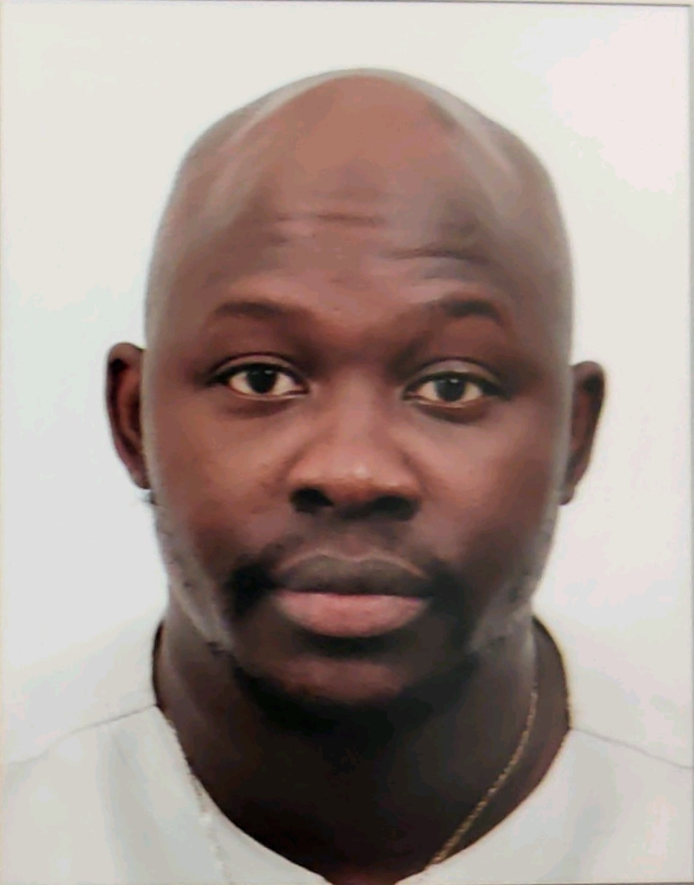

Qui suis-je ?
Salut.
Je m'appelle Benjamin, je suis actuellement en contrat d'altenance depuis Novembre 2021 avec
l'école supérieure de l'alternance CESI et l'assocition Nant'Est Entreprises comme Chef de projet communication digitale.
J'ai des expériences dans le webmarketing, d'abord dans les réseaux sociaux chez PROGRESS'SCION avant de passer chez BOURMAUD ÉQUIPEMENT où j'ai participé à la refonte du site internet et de la communication OnLine et OffLine de la marque.
J'ai développé 3 compétences clées sur ses expériences en entreprise comme :
- L'acquisition de trafics qualifiés notamment avec le référencement naturel (SEO) et la création de contenu.
- La création d'une marque sur internet avec la gestion et le développement sur les réseaux sociaux.
- Et la gestion de leads qualifiés sur une niche précise.
- La création ou la refonte de site web avec le CMS Wordpress.
- Etc ...
C'est pour cette raison que des postes en marketing digital avec un axe fort sur le développement d'une marque sur les réseaux sociaux m'intéresse plus particulièrement.
Je souhaite évoluer dans un environnement favorisant mon développement professionnel dans le cadre d’une collaboration durable. Dans une entreprise qui sait me reconnaitre et m'accompagner dans mon parcours professionnel.
J'💚 le thé et aussi préparer beaucoup de cuisines sénégalaises fait par mes soins comme le Yassa poulet ou le mafé.
Si vous souhaitez me suivre sur Twitter, mon nom d'utilisateur est @Eljefemendy.
Veuillez trouver en pièces jointes, en cliquant ci-dessous, mon CV et mon PORTFOLIO.
-

Violons d'Ingres.
"R.-L. Dupuy a mieux qu'un violon d'Ingres ; il en a deux le dessin et la sculpture. Il a une prédilection pour la pierre de taille et le travail des « bois flottés Il passe la plus grande partie de ses vacances dans son habitation de troglodyte aux Baux-de Provence où il s'en donne à cœur joie dans les rochers."
Pierre Bruneau, Magiciens de la publicité -

J'ai acquis en formation mais aussi en entreprises des compétences et ce portfolio est créé pour démontrer en vue d'une reconnaissance par un établissement d'enseignement ou un employeur.